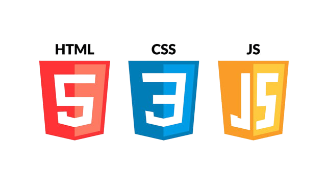

Sou estudante de desenvolvimento front-end, com foco em HTML, CSS e JavaScript. Desenvolvo páginas web, formulários e interfaces simples, aplicando boas práticas de estruturação, estilização e organização do código. Busco minha primeira oportunidade na área de tecnologia, com o objetivo de aprender continuamente, ganhar experiência prática e evoluir como desenvolvedor front-end.
